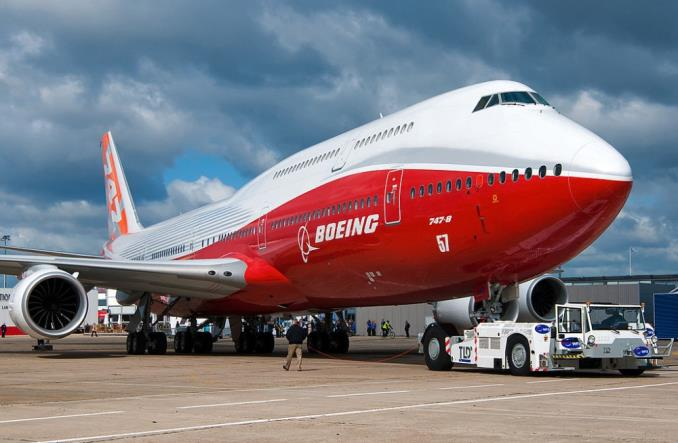
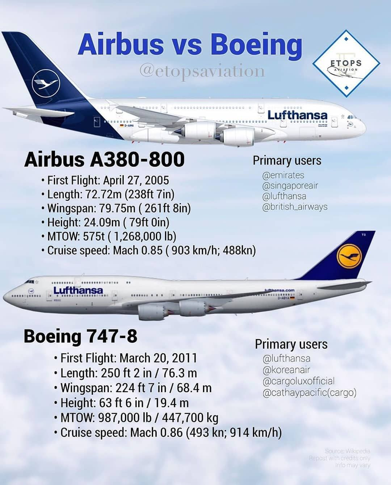
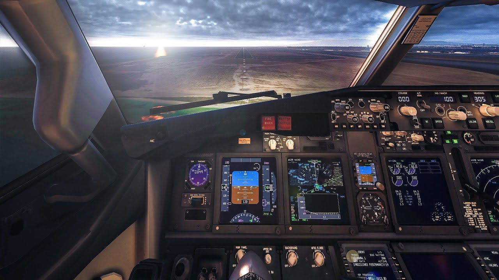

Lotnictwo
Strona Główna
Formuła 1Informatyka
Speedcubing
Jak już wcześniej wspomniałem jedną z moich pasji jest lotnictwo. Najbardziej interesuje mnie lotnictwo cywilne więc o takim będę pisał.

Powiedzmy o kilku faktach na temat lotnictwa:
- Lotnictwo to najbezpieczniejszy środek transportu.
Jest tak z prostego powodu, poprostu każdy wypadek jest dogłębnie analizowany przez ekspertów, którzy ustalają nowe wytyczne np. na temat szkoleń załogi.
Takie śledztwa można zobaczyć np. w programie "Katastrofa w Przestworzach"
-
Zdecydowana większość samolotów to produkty tylko dwóch firm: Europejskiego Airbusa i Amerykańskiego Boeinga.
Obaj giganci cały czas rywalizują między sobą o udział w rynku. Jeżeli spojrzymy na modele obu producentów to prawie od razu zauważymy, że każdy model ma swojego odpowiednika u konkurencji.
To zjawisko możemy zauważyć chociażby na grafice poniżej.

-
Nie potrzeba kupować drogiej wycieczki do miejsca gdzie są profesjonalne symulatory, kiedy można pobrać inny z internetu!
Takie symulatory to np. MFS 2020, X-plane 11 i wiele innych. Tak się składa, że posiadam ten ostatni. Jeśli jesteś tym zainteresowany to proszę kliknąć tutaj.
